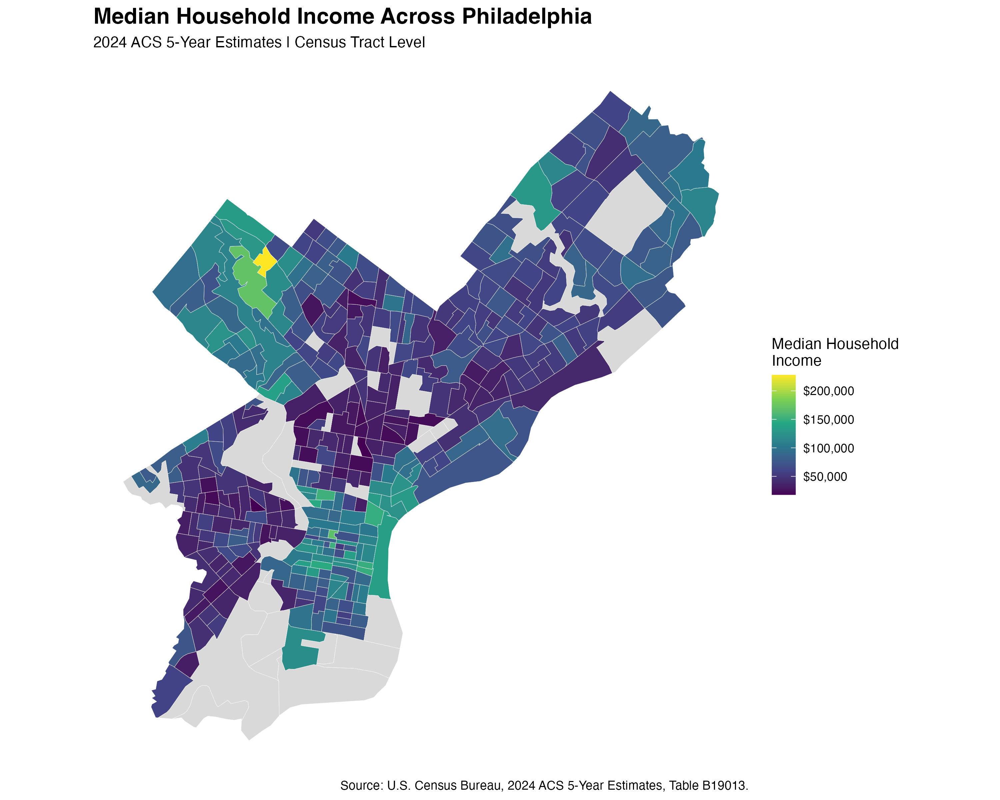
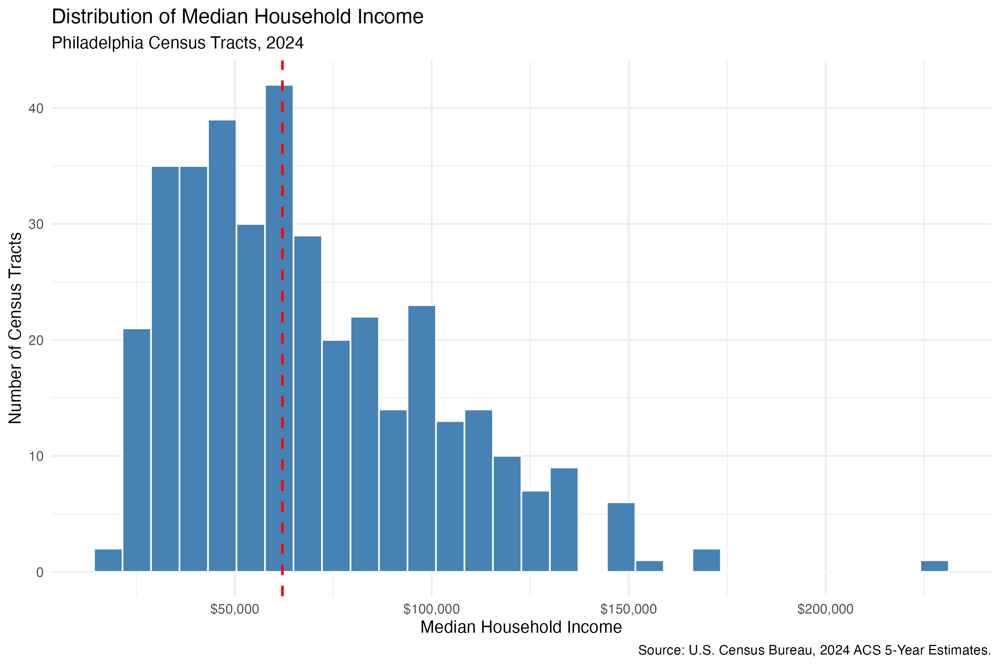

Mapping Income Inequality in Philadelphia
A Census Tract-Level GIS Analysis
Introduction
Economic conditions can differ substantially within a single city. A citywide income figure summarizes Philadelphia as a whole, but it can hide differences between neighborhoods. This post asks: How does median household income vary across Philadelphia census tracts, and what spatial patterns of income inequality can we observe?
I use geographic information systems (GIS) to map household income across Philadelphia and a histogram to examine the distribution of tract-level income estimates. Together, these figures reveal both where higher- and lower-income areas appear and how widely tract-level incomes vary.
Data and Methods
The analysis uses the 2024 American Community Survey (ACS) 5-Year Estimates, Table B19013, published by the U.S. Census Bureau. The key measure is median household income in the past 12 months, expressed in 2024 inflation-adjusted dollars. The geographic unit is the census tract within Philadelphia County, Pennsylvania.
I downloaded the ACS table as a CSV file from data.census.gov, cleaned the income estimates in R, and matched them to 2024 census tract cartographic boundaries using the shared GEOID identifier. Geographic boundaries were retrieved with the tigris package; sf and ggplot2 were used to prepare and visualize the spatial data. The resulting map uses a continuous color scale for income and gray for tracts without a valid income estimate.
Of 408 census tracts, 375 have valid positive median household income estimates in the cleaned dataset; 33 are shown as missing on the map. Missing values are not interpreted as zero income. The descriptive statistics below treat each valid tract equally rather than weighting tracts by the number of households.
| Tract-level statistic | Value |
|---|---|
| Tracts with valid income estimates | 375 |
| Mean of tract median incomes | $68,707 |
| Median of tract median incomes | $62,083 |
| Minimum tract median income | $17,875 |
| Maximum tract median income | $227,656 |
| Standard deviation across tracts | $32,658 |
Geographic Patterns in Household Income

Figure 1 (Figure 1) shows that income is not evenly distributed across Philadelphia. Several relatively high-income tracts appear near one another in the northwestern part of the city, visible in green and yellow. By contrast, many tracts in the central and southwestern portions of the map appear in darker purple, indicating lower median household incomes. Other parts of the city contain a mix of income levels, underscoring variation even across nearby tracts.
The gap between the highest and lowest observed tract median incomes is approximately $209,781, and the highest estimate is about 12.7 times the lowest. These comparisons indicate substantial differences in the typical household income of different census tracts. They do not mean that the highest-income household in Philadelphia earns 12.7 times the lowest-income household: the unit being compared is the tract median, not individual household income.
The visual concentration of similarly colored neighboring tracts suggests a possible spatial clustering of income levels. This matters because a citywide summary could conceal geographically concentrated differences in economic resources. However, a map alone cannot establish whether the clustering is statistically significant or identify what caused it. Factors such as housing costs, employment opportunities, and historical development may be relevant hypotheses, but testing them would require additional data and analysis.
How Unequal Are Tract-Level Income Estimates?

Figure 2 (Figure 2) complements the map by showing the overall distribution of tract median incomes. Many tracts fall roughly between $30,000 and $100,000, while a smaller number have much higher values. The long upper tail gives the distribution a right-skewed shape.
The mean tract median income ($68,707) exceeds the median across tracts ($62,083), consistent with a relatively small number of high-income tracts pulling the mean upward. The standard deviation of approximately $32,658 also indicates considerable dispersion across geographic areas.
The histogram tells us how income estimates are distributed across tracts, but it does not show where those tracts are located. Conversely, the map highlights geographic patterns but makes the overall shape of the distribution harder to see. Using both figures provides a more complete description of spatial income differences.
Conclusion
Philadelphia’s census tracts exhibit substantial variation in median household income. The GIS map suggests that relatively high- and low-income tracts are not randomly scattered to the eye: some appear in geographically concentrated groups, especially a higher-income cluster in the northwest and lower-income areas across parts of the center and southwest. The histogram adds evidence that the distribution of tract medians is right-skewed, with a relatively small upper-income tail.
The central lesson is that geography matters when describing economic inequality. A single citywide income measure cannot show the extent or location of differences between census tracts. Mapping those differences offers a useful starting point for asking more targeted questions about housing, opportunity, and access to services.
Limitations and Next Steps
This is a descriptive, not causal, analysis. ACS figures are survey estimates with sampling uncertainty; 33 tracts lack valid estimates in this dataset. Census tracts differ in population and household counts, so unweighted tract summaries should not be interpreted as citywide household income statistics. Median income within each tract also does not measure inequality within that tract. Finally, the apparent clustering has not been tested with a formal spatial statistic such as Moran’s I.
A future extension could compare income with housing costs, transit access, or other neighborhood characteristics and test spatial autocorrelation explicitly.
Sources and Reproducibility
- U.S. Census Bureau. 2024 American Community Survey, 5-Year Estimates, Table B19013, Median Household Income in the Past 12 Months (in 2024 Inflation-Adjusted Dollars). Data table.
- U.S. Census Bureau. 2024 Census Tract Cartographic Boundary Files, accessed through the R
tigrispackage. - Analysis tools: R,
tidyverse,sf,tigris,ggplot2, andscales.
The project’s scripts, cleaned data, figures, and summary table are organized in the Blog5 repository. The two figures referenced here are saved under results/figures/.